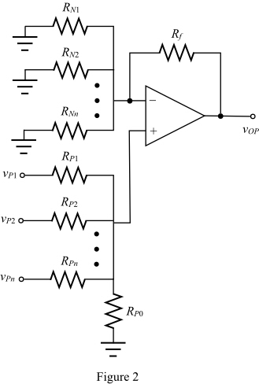

Apply Kirchhoff’s current law at non-inverting terminal of the op-amp.
The voltages at inverting and non-inverting terminals of the op-amp are same for ideal op-amp.

Apply Kirchhoff’s current law at non-inverting terminal of the op-amp.
(a)
Refer to circuit diagram in Figure P2.47 in the textbook.
Consider the sources connected to the inverting terminal of the op-amp and short circuit the voltages connected to the non-inverting terminal. The modified circuit is shown in Figure 1.
Apply Kirchhoff’s current law at non-inverting terminal of the op-amp.
The voltages at inverting and non-inverting terminals of the op-amp are same for ideal op-amp.
Apply Kirchhoff’s current law at non-inverting terminal of the op-amp.
Now, consider the sources connected to the non-inverting terminal of the op-amp and short circuit the voltages connected to the inverting terminal. The modified circuit is shown in Figure 2.

 …… (1)
…… (1)
Here,
Apply Kirchhoff’s current law at inverting terminal of the op-amp.
Here,
Substitute for  in the equation.
in the equation.
Calculate the output voltage.
Substitute for , for in the equation.
Therefore, the output voltage,  is,
is,
.
Here,

And,

(b)
The output voltage expression is,
…… (2)
The smallest resistor used must be .
Compare equation (2) with output voltage obtained in sub part (a).
…… (3)
…… (4)
…… (5)
Divide equation (4) with equation (5).
Assume .
Substitute  for in the equation.
for in the equation.
Assume .
Recall equation (3).

Substitute  for in the equation.
for in the equation.
Calculate the value of  .
.
From the output voltage, two sources with input resistances and connected to non-inverting terminal of the op-amp.
Calculate the value of  .
.
The designed circuit is shown in Figure 3.